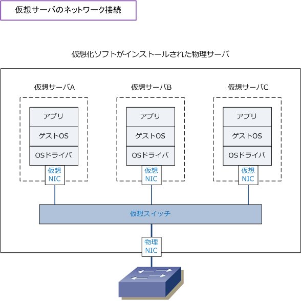
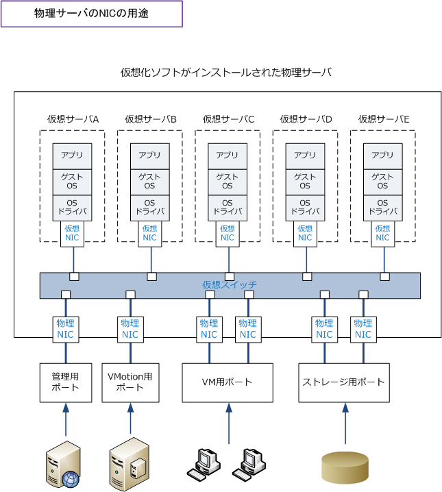
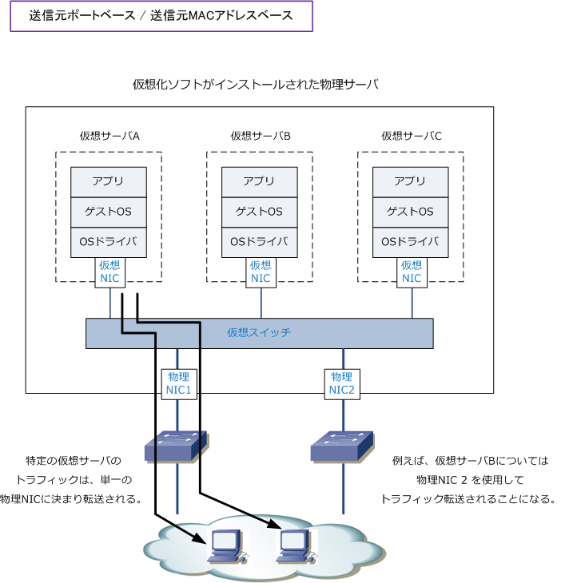
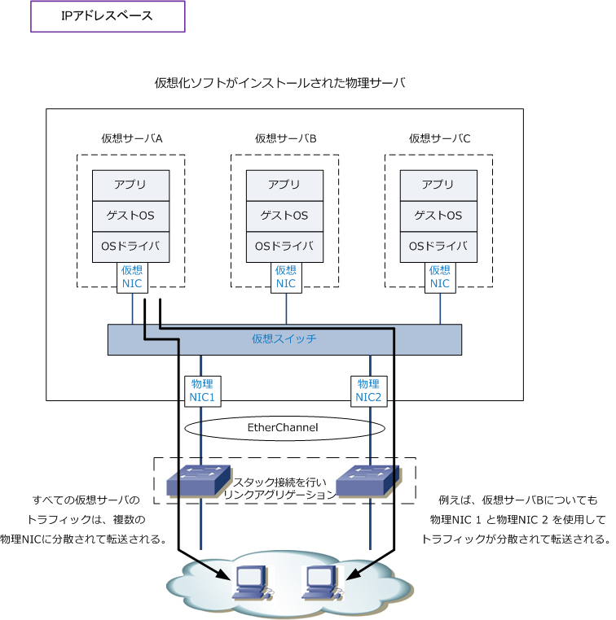
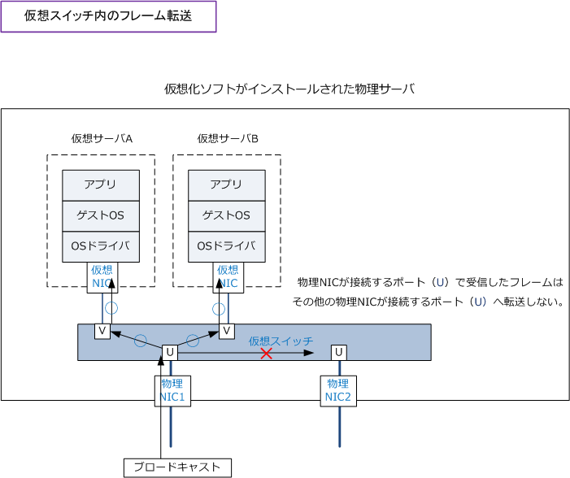

Server Virtualization 2
仮想サーバのネットワーク接続
それぞれの仮想サーバには仮想NIC（vNIC）が割り当てられます。その仮想NICは仮想スイッチに 接続されて、その仮想スイッチが物理NICと接続します。そして、物理NICが外部の物理スイッチと 接続することで、ネットワーク通信を行っています。

仮想化ソフトのインストールされた物理サーバのNICは、複数の仮想サーバの仮想NICを集約するので 物理NICは最低でも1Gbpsにし、仮想サーバの数やアプリケーションにより10GbpsのNICを搭載します。
物理サーバのNICの使い分け
仮想サーバを集約する物理サーバには、多くの物理NICを搭載させ、用途ごとに物理NICを使い分ける ことが推奨されています。例えば仮想化ソフトのVMwareの場合、以下の4種類の分離を推奨しています。
| 物理NICの用途 | 説明 |
|---|---|
| VM用ポート | 仮想サーバとクライアントなどの通信トラフィックに利用。最も重要度の高いサービスポート。 |
| VMotion用ポート | 仮想サーバを、他の物理サーバ上に移動する際に利用。移動時は多くの帯域を消費。 |
| ストレージ用ポート | ストレージと通信するために利用。重要度が高く、最も帯域を消費するポート。 |
| 管理用ポート | vCenterなどの管理サーバとの通信に利用。帯域の消費は少なく、重要度は高くないポート。 |

使用用途が異なるトラフィックを分離することにより、特定のトラフィックによる帯域の圧迫を回避します。 使用用途ごとにNICを使い分けるために、仮想スイッチでVLANを設定します。仮想NICと物理NICとが接続 するVLANを指定します。
物理サーバのNICの冗長化
物理サーバの物理NICに障害が発生した場合、すべての仮想サーバと通信ができなくなってしまいます。 従って、物理サーバの物理NICは冗長化させることが推奨です。物理NICの冗長化はチーミングという 技術で実現します。チーミングとは、複数の物理NIC（ネットワークアダプタ）を束ねて1つの物理NIC （ネットワークアダプタ）を形成する技術です。以降を読む前に先ず チーミングとは をご参考下さい。

仮想環境におけるチーミング
サーバ仮想化をしている物理サーバのチーミングには、「ハイパーバイザーの機能を利用する方法」と 物理NICのチーミング機能の1つである「リンクアグリゲーション」の大きく2種類の方法があります。 これらのどのチーミングを利用するのかは物理サーバにインストールした仮想化ソフトにより異なります。
| 仮想化ソフト | 仮想化ソフトが利用できるチーミング機能 |
|---|---|
| VMware ESX | ハイパーバイザーの機能を利用 |
| VMware ESX / Microsoft Hyper-V / Citrix XenServer | 物理NICのチーミング機能を利用 |
※ 物理NICのチーミング機能であるリンクアグリゲーションを使用する場合、L2スイッチ側はスタック構成とすることが推奨。 ※ ハイパーバイザーの機能を利用したチーミングにおいても、IPアドレスベースの場合は、スイッチ側でスタック構成が推奨。
ハイパーバイザーの機能を利用したVMware ESXにおける負荷分散方式には以下の3つの種類があります。 Port ID BasedとSource MAC Basedでは、負荷分散の効果はほぼ同じなので、基本的には、負荷の軽い Port ID Basedの負荷分散の方が最適です。不特定多数のクライアントが利用するストリーミングサーバや トラフィック量の多いサーバが仮想サーバにいる場合は、最も負荷分散の効果の高いIP Hashが有効です。
| VMwareの負荷分散方式 | 説明 |
|---|---|
| 送信元ポートベース （Port ID Based） |
送信元仮想ポートID方式。デフォルト利用されるアルゴリズム。仮想NICが接続している仮想 ポートごとに、利用する物理NICを決定する。標準の仮想スイッチのポート番号は、内部的に 管理されているため、仮想NICがどの仮想ポートに割り当てられているのかは確認できない。 |
| 送信元MACアドレスベース （Source MAC Based） |
送信元MACハッシュ方式。仮想NICのMACアドレスに基づいて、利用する物理NICを決定する アルゴリズム。Port ID Basedと同様、単一の仮想NICが単一の物理NICに対応することになる。 ※ Port ID Basedの方式で使用する物理NICの偏りが発生する場合、この方式が有効である。 |
| IPアドレスベース （ IP Hash ) |
送信元、宛先IPアドレスハッシュ方式。トラフィックの送信元アドレスと宛先アドレスのペアの 情報をもとに利用する物理NICを決定する仕組みである。複数の通信先がある場合、単一の 仮想NICが複数の物理NICを利用することになる。負荷分散としては最適な仕組みと言える。 スイッチでIEEE 802.3adLink Aggregationを有効にする必要があり、スタック構成が推奨。 |
下図で仮想サーバAにフォーカスして、仮想サーバの負荷分散方式の違いを図で確認してみましょう。

IPアドレスベースの負荷分散方式である場合、トラフィックフローは以下となります。

参考情報 ： 仮想スイッチ内のフレーム転送
クライアントPCからのブロードキャストが仮想サーバ宛に転送される場合、物理NICが接続する仮想スイッチ のポートから物理NICが接続する仮想スイッチのポートへは転送されないのでループを意識しなくてOKです。

← サーバ仮想化とは